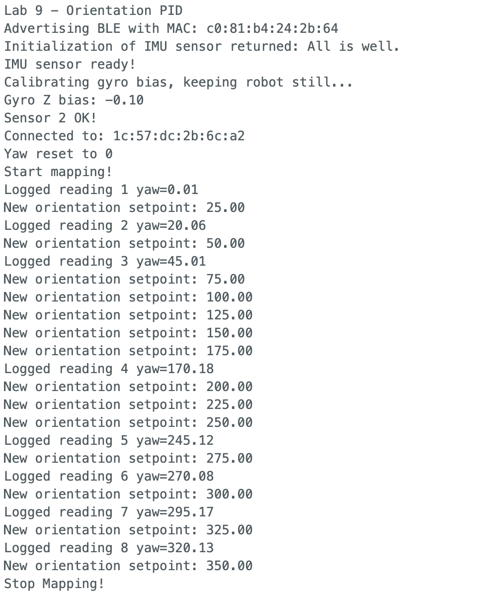
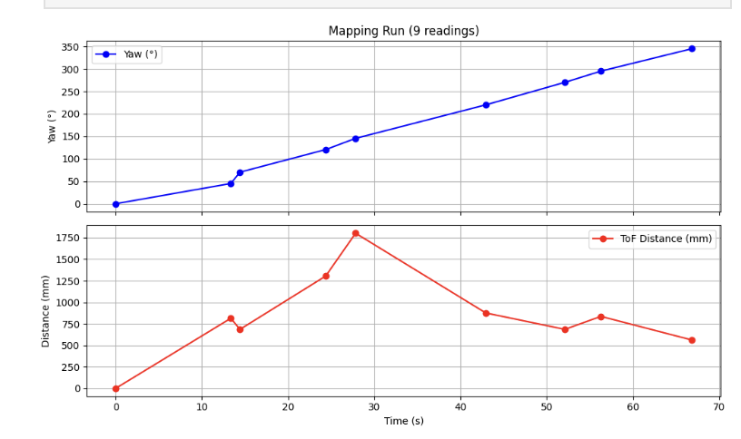
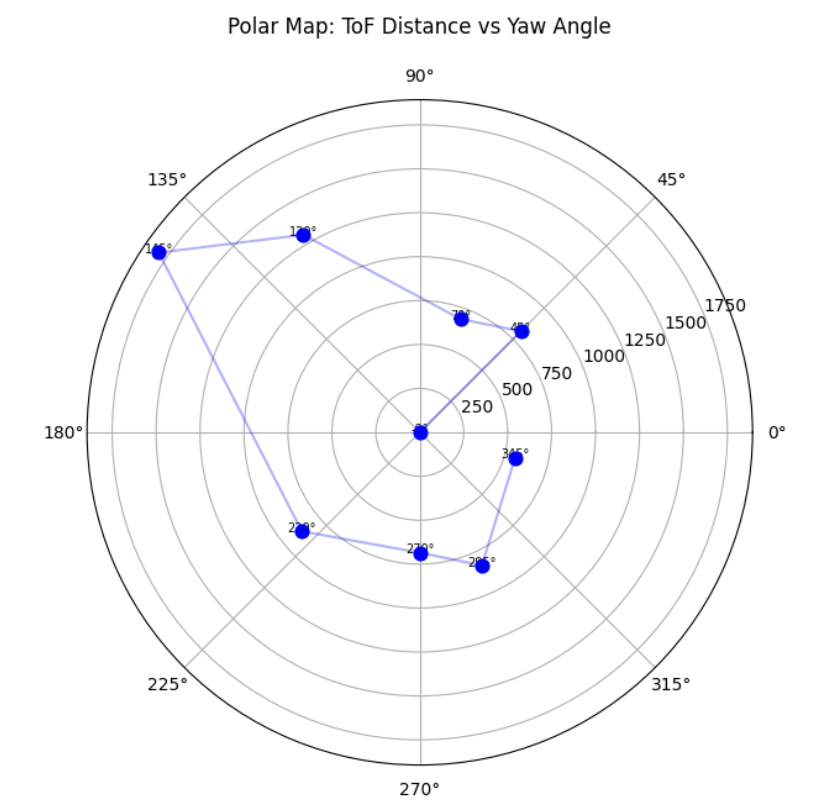
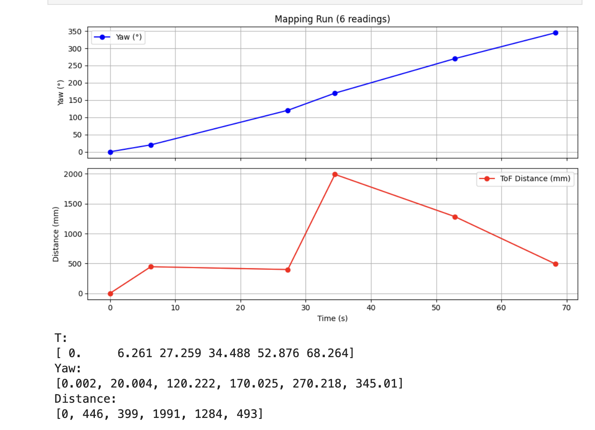
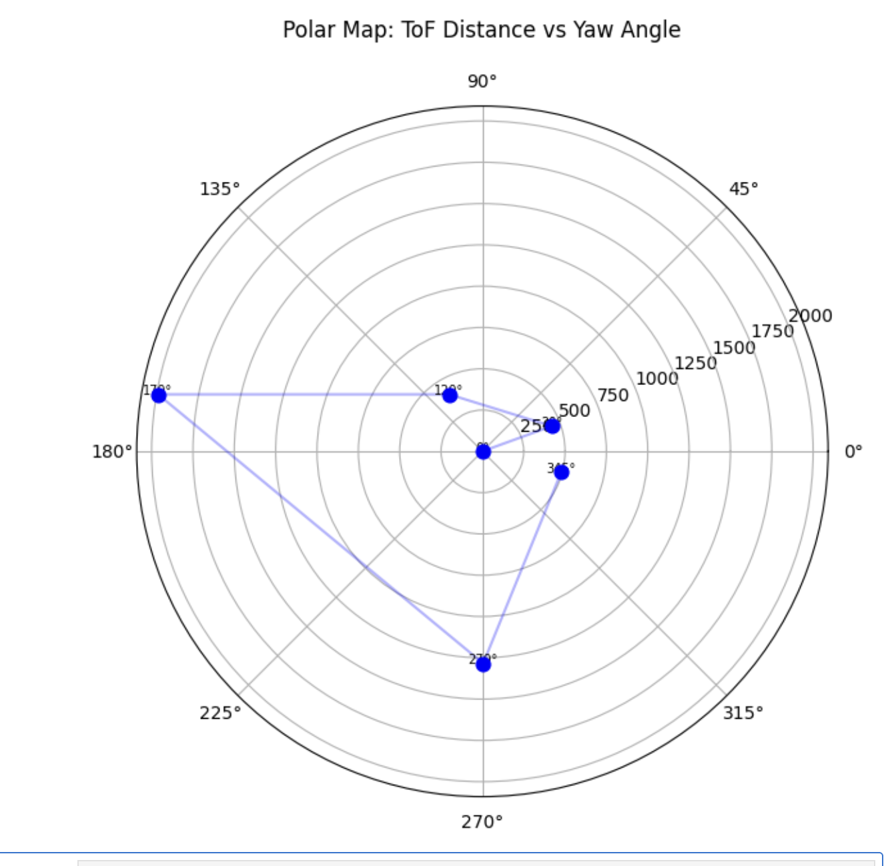
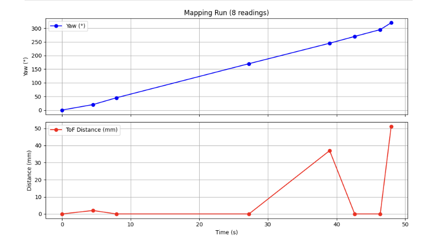

Lab 9: Mapping
Objective
The goal of this lab is to build a static map of a "room" by placing the robot at several marked positions and having it perform an on-axis 360° rotation, taking ToF distance readings at fixed angular increments. Each scan produces a polar distance profile centered on that position. Scans from all positions are then merged into a single global map using transformation matrices.
The lab uses five marked positions in the map room: (-3, -2), (-3, 2), (0, 0), (5, -3), and (5, 3) in feet. Due to robot hardware failures mid-session, I was only able to collect usable data from two of the five positions: (-3, 2) and (5, -3). The remaining three are planned for a follow-up session once the hardware is debugged.
Control System Design
The robot performs its 360° scan using closed-loop orientation PID on the gyroscope-integrated yaw angle. Only the rotation is closed-loop — the data collection timing is open-loop, driven by fixed sleep intervals in Python. The ToF sensor runs continuously in the background and its most recent reading is logged when the robot settles at each target angle.
Orientation PID Controller
The controller is P-only, using integrated gyro yaw as the process variable and
differential drive (one motor forward, one backward) as the control output.
A YAW_DEADZONE of ±5° defines the settled region. A minimum PWM
floor of 80 ensures the motors always overcome static friction when a correction
is needed, since P-only control produces very low output near the setpoint
where the proportional term alone may fall below the motor deadband.
#define YAW_DEADZONE 5.0 // degrees — settled if |error| < 5°
float orientation_Kp = 6.0;
void runOrientationPIDController() {
if (myICM.dataReady()) {
myICM.getAGMT();
updateGyroYaw();
}
orientation_error = orientation_setpoint - gyro_yaw;
orientation_control_speed = orientation_Kp * abs(orientation_error);
orientation_control_speed = constrain(orientation_control_speed, MIN_SPEED, MAX_SPEED);
if (abs(orientation_error) < YAW_DEADZONE) {
stop();
// log one reading per setpoint
if (!angle_read_already && arr_index < ARRAY_SIZE) {
T_arr[arr_index] = millis();
Yaw_arr[arr_index] = gyro_yaw;
Measured_distance_arr[arr_index] = distance2;
arr_index++;
angle_read_already = true;
}
} else {
// minimum speed floor to overcome static friction
orientation_control_speed = max(orientation_control_speed, 80.0f);
if (orientation_error > 0) rotateCCW(orientation_control_speed);
else rotateCW(orientation_control_speed);
}
}angle_read_already flag
ensures exactly one ToF reading is logged per setpoint. It is cleared
whenever SET_ORIENTATION_SETPOINT is received, so the robot
logs a fresh reading each time the target angle changes.
The minimum speed floor of 80 PWM prevents the robot from stalling
short of the target when the error is small and Kp × error
would otherwise fall below the motor deadband.
Sensor Setup
The ToF sensor (VL53L1X sensor 2) is configured in long distance mode for this lab, since the room dimensions require readings up to ~4 meters. The gyro bias is calibrated on every boot by averaging 200 samples while the robot is still.
// ToF — long distance mode for room-scale mapping
sensor2.setDistanceModeLong();
// Gyro bias calibration at startup (robot must be still)
void calibrateGyroBias() {
float sum = 0.0;
for (int i = 0; i < 200; i++) {
while (!myICM.dataReady()) { delay(1); }
myICM.getAGMT();
sum += myICM.gyrZ();
delay(10);
}
gyro_z_bias = sum / 200;
}
// In START_MAPPING: reset dt reference to prevent first-step spike
last_time = millis();last_time = millis() reset inside the
START_MAPPING_360_ROTATION command handler prevents a large
spurious dt on the first gyro integration step, which would cause the
yaw estimate to jump by tens of degrees before the robot moves.
Command Enum
enum CommandTypes {
START_MAPPING_360_ROTATION, // 0 — start PID, reset arr_index
STOP_MAPPING_360_ROTATION, // 1 — stop motors
SEND_MAPPING_DATA, // 2 — BLE transmit all logged readings
SET_ORIENTATION_SETPOINT, // 3 — update target yaw, reset angle_read_already
RESET_YAW, // 4 — zero gyro_yaw and setpoint
};CMD_lab9 enum mirrors these indices exactly.
A previous bug where the Python enum had values offset by one caused
every SET_ORIENTATION_SETPOINT to be interpreted as
RESET_YAW, resetting the robot to 0° after every 25°
increment — which is why the robot only completed the first turn.
Python Scan Sequence
ble.send_command(CMD_lab9.RESET_YAW, "")
ble.send_command(CMD_lab9.START_MAPPING_360_ROTATION, "")
time.sleep(4.5) # settle at 0°
for angle in range(25, 375, 25): # 25° to 350° in 25° steps
ble.send_command(CMD_lab9.SET_ORIENTATION_SETPOINT, f"{float(angle)}")
time.sleep(4.5) # wait to settle + log
ble.send_command(CMD_lab9.STOP_MAPPING_360_ROTATION, "")
time.sleep(1.0)
ble.send_command(CMD_lab9.SEND_MAPPING_DATA, "")Debugging
Lab 9 involved an unusually long debugging journey. The rotation control itself worked correctly in early testing (Video 1 shows the robot completing a clean 360° rotation on a lab table in 25° increments), but I broke the code while adding data collection and did not push the working version to GitHub. Recovering reliable end-to-end behavior — rotation, logging, and BLE transmission — required working through several independent bugs in sequence.
Bug 1: Python Enum Mismatch
The most impactful early bug was a mismatch between the Arduino and Python
command enums. The Python CMD_lab9 had its values offset by one
starting from STOP_MAPPING_360_ROTATION:
# Broken Python enum (values mismatched):
class CMD_lab9(Enum):
START_MAPPING_360_ROTATION = 0 # correct
STOP_MAPPING_360_ROTATION = 2 # wrong — should be 1
SEND_MAPPING_DATA = 3 # wrong — should be 2
SET_ORIENTATION_SETPOINT = 4 # wrong — should be 3
RESET_YAW = 5 # wrong — should be 4SET_ORIENTATION_SETPOINT command
sent value 4, which Arduino interprets as RESET_YAW.
The robot would turn to 25°, receive a "reset yaw" and snap back to 0°,
then turn to 25° again — producing only one or two readings instead of 15.
Bug 2: Serial.print() Flooding BLE
After fixing the enum, the robot still behaved erratically — spinning fast,
then slowly, then fast again. The cause was debug Serial.print()
statements left active inside runOrientationPIDController().
Printing on every loop iteration blocked the loop long enough to corrupt
dt in updateGyroYaw() — the gyro integration uses
millis() to compute elapsed time, so Serial blocking caused
dt to spike, making the integrated yaw accumulate 10–20° of
spurious rotation per second. Removing all in-loop prints fixed both the
erratic motion and the gyro drift.
Bug 3: Zero Data Points Received
Even with correct motion, SEND_MAPPING_DATA consistently
returned 0 data points. The root cause was that the notification handler
was registered on RX_STRING — the channel Python uses to send
commands to the Artemis — instead of TX_STRING, which is
the channel the Artemis uses to send data back to Python. However,
because earlier labs had used RX_STRING for notifications and
they worked, the real issue turned out to be something else: the notification
handler was registered correctly, but arr_index was 0 when
SEND_MAPPING_DATA ran, meaning nothing had been logged.
This led to the next bug.
Bug 4: Settle Timer Preventing Logging
The data logging used a 300ms settle timer: the robot had to remain within
the YAW_DEADZONE continuously for 300ms before a reading was
logged. Because the robot oscillated slightly around the setpoint with P-only
control, it would briefly exit the deadzone, resetting the timer to zero.
It never accumulated the full 300ms and arr_index stayed at 0.
Removing the settle timer entirely and logging on the first deadzone
entry solved this:
// Before: settle timer caused zero readings
if (!angle_read_already && (millis() - settled_since > SETTLE_MS) && arr_index < ARRAY_SIZE)
// After: log immediately on first deadzone entry
if (!angle_read_already && arr_index < ARRAY_SIZE)stop() is called the instant the robot enters the
deadzone, there is no need to wait — the robot is physically stopped
at that moment. The settle timer was causing more problems than it solved.
Bug 5: Multiple Readings Per Setpoint
After removing the settle timer, the robot correctly logged a reading on
first entry into the deadzone. But it then logged 3–4 more readings at the
same angle before the next setpoint arrived, because the robot oscillated
just outside the deadzone, which reset angle_read_already = false
in the else branch. The fix was removing that reset — angle_read_already
now only resets when a new setpoint is sent via SET_ORIENTATION_SETPOINT:
// Removed from else branch:
// angle_read_already = false; ← was causing re-logging
// SET_ORIENTATION_SETPOINT now handles the reset:
case SET_ORIENTATION_SETPOINT:
orientation_setpoint = new_setpoint;
angle_read_already = false; // ← reset here only
break;Bug 6: Motors Stalling Short of Target
With P-only control and Kp = 6, the PWM output at 5–8° error is
30–48, which after applyDeadband() maps to ~115–130 — barely above
the deadband. Once the robot stops, static friction requires more torque to
restart than to keep moving, so the robot would stall a few degrees short.
A fully charged battery improved this (higher voltage → more torque at the
same PWM), and a minimum speed floor of 80 PWM eliminated stalling entirely.
} else {
// minimum speed floor to overcome static friction
orientation_control_speed = max(orientation_control_speed, 80.0f);
if (orientation_error > 0) rotateCCW(orientation_control_speed);
else rotateCW(orientation_control_speed);
}Serial Monitor Timing Issue
Because the USB cable must be disconnected to allow free rotation, the
Serial Monitor is unavailable during actual mapping runs. Several debugging
sessions were wasted because debug prints were only visible when the cable was
connected, but the robot misbehaved only when free to rotate without the cable.
The solution was to re-add temporary debug prints to runOrientationPIDController(),
run a tethered test with restricted rotation, verify behavior, then remove
the prints before the real untethered scan.
Initial Rotation Test (Video 1)
Before adding data collection, the rotation system worked correctly. Video 1 shows the robot completing a clean 360° rotation on a lab table in 25° increments — the original working version that was subsequently broken while integrating data collection.
Initial rotation test on a lab table showing clean 25° increments over a full 360°. This was the working version before data collection was added. The code was not pushed to GitHub before the next changes broke it.
Final Achieved State
After resolving all bugs, the robot typically logs 8–9 readings per run out of the target 15. The remaining missed readings are due to gyro drift accumulating over the ~70-second scan — by 200°+ the integrated yaw can be off by 10–15°, so the robot thinks it has reached the setpoint but physically hasn't entered the deadzone. The Serial Monitor output below shows a representative run with 8 successfully logged readings.

Mapping Results
Scans were attempted at all five marked positions. The robot produced usable data from two positions before hardware issues (suspected low battery or loose wiring) caused it to stop mid-run. All reported angles are relative to the robot's starting orientation at that position — not absolute compass headings. Merging these scans into a global frame will require applying rotation transformation matrices to account for each robot's initial heading.
Position (-3, 2) ft
Mapping run at position (-3, 2). The robot completes most of the 360° scan, settling at 9 of the 15 setpoints.


Position (5, -3) ft
Mapping run at position (5, -3). 6 readings logged due to continued gyro drift issues and motor stalling at higher accumulated angles.


Position (5, 3) ft — Robot Stopped
Mapping attempt at position (5, 3). The robot stops moving partway through the scan, likely due to low battery or a loose wire. The ToF also returns near-zero distances for most readings, indicating a sensor malfunction.

Positions (-3, -2) and (0, 0) — Not Attempted
After the (5, 3) failure, the robot did not resume reliable operation within the available lab time. Positions (-3, -2) and (0, 0) were not scanned. These are planned for a follow-up session.
Coordinate Transformation
Each scan produces distance readings in the robot's local polar frame: angle
is measured from the robot's starting heading (0° = direction it was pointing
when RESET_YAW was sent), and radius is the ToF distance.
To merge scans from multiple positions into a single global map, each reading
must be transformed into global Cartesian coordinates using:
# For each (angle_deg, dist_mm) reading at robot position (rx, ry) ft,
# with robot starting heading offset theta_0 (degrees from global +x axis):
import numpy as np
def to_global(rx_ft, ry_ft, theta_0_deg, angle_deg, dist_mm):
dist_ft = dist_mm / 304.8 # mm → feet
# total angle in global frame
global_angle_rad = np.deg2rad(angle_deg + theta_0_deg)
gx = rx_ft + dist_ft * np.cos(global_angle_rad)
gy = ry_ft + dist_ft * np.sin(global_angle_rad)
return gx, gytheta_0_deg is the robot's initial heading at each position
relative to the global coordinate frame (estimated by visual alignment
with the room's grid markings, or measured with a compass). Since the
yaw angle is relative to wherever the robot was pointed when
RESET_YAW ran, any misalignment in starting heading
rotates the entire scan. For a clean merged map, all five robots must
start pointing in the same global direction, or theta_0
must be measured and corrected per position.
With only 2 of 5 positions scanned, the global map cannot be assembled yet. Once all positions are collected, the transformation above will be applied to all readings and the resulting (gx, gy) points will be plotted together to reconstruct the room outline.
Updates Later
This section will be updated after additional lab testing. Planned work:
- Debug and fix the hardware issue that caused the robot to stop at (5, 3) — likely a loose Qwiic cable or low battery
- Complete scans at (-3, -2), (0, 0), and (5, 3)
- Improve data collection to consistently reach 14+ readings per scan (currently achieving ~9)
- Apply coordinate transformations to merge all five scans into a global map
- Compare the merged map against the known room geometry
Results and figures will be added here after the follow-up session.
References
- Lab 9 Instructions — Fast Robots @ Cornell
- Jeffery Cai's Lab 9 Report (referenced for how Jeffery approach this task)
- Grammarly writing assistance is used to fix my report's grammar and sentence flow.